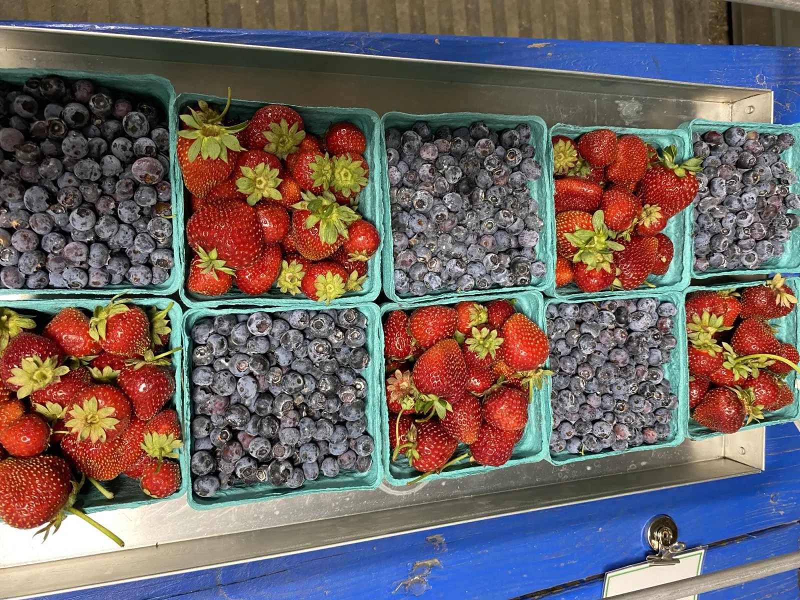
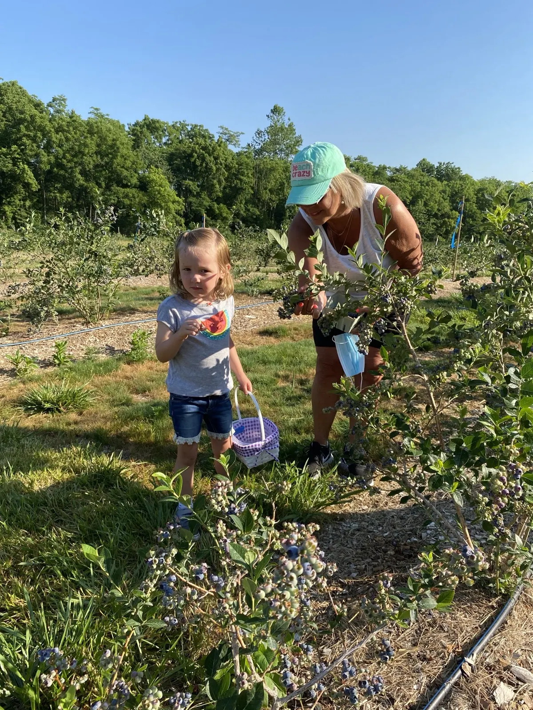
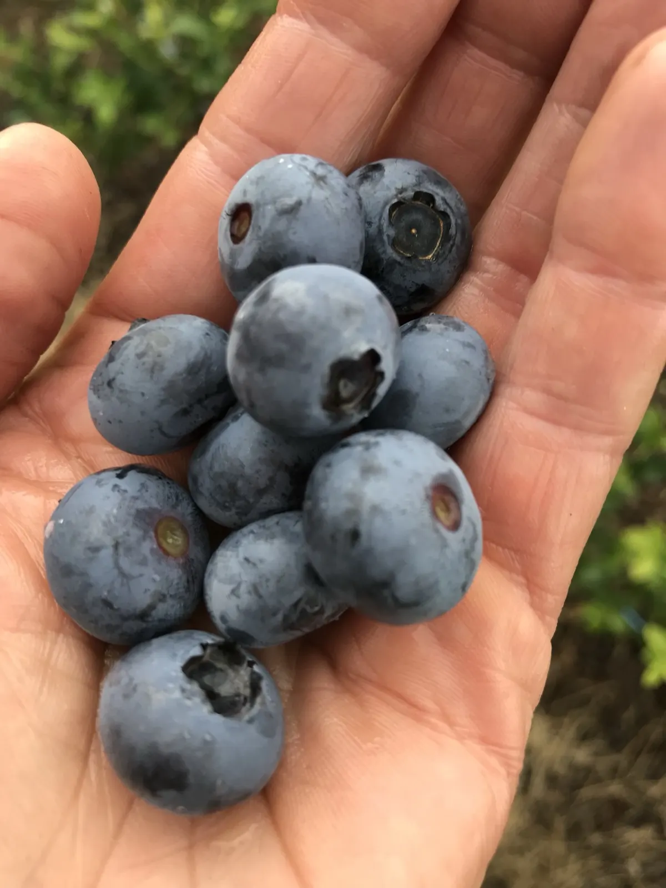
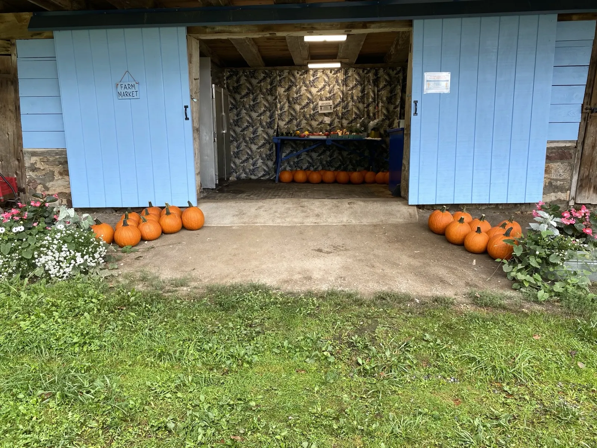
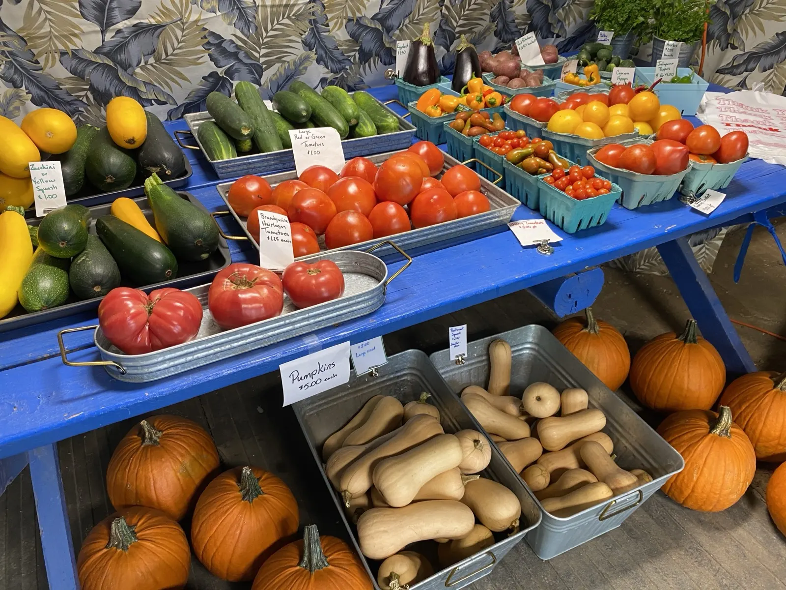
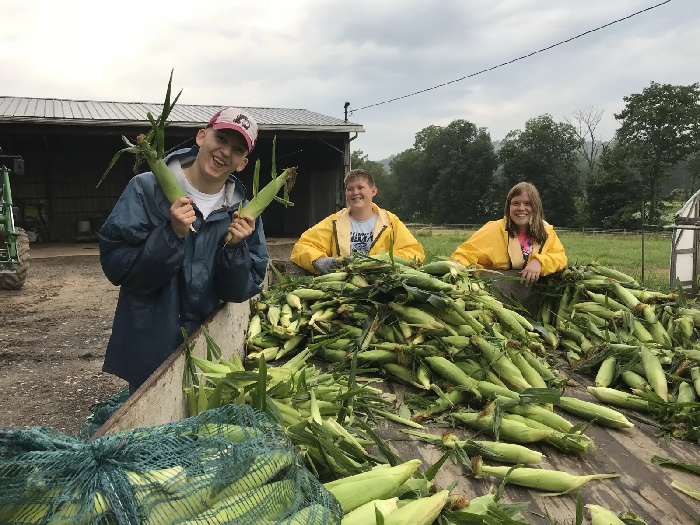
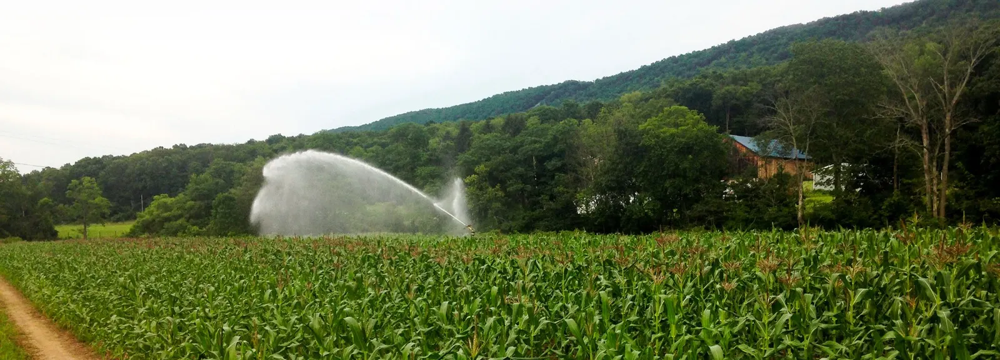

Come and pick your own fresh berries.

When the berries come in
- Strawberriesearly June
- Red raspberriesmid to late June
- Blueberriesend of June
- Black raspberriesfirst week of July
- Sweet cornfrom mid-July
High quality berries and vegetables. Pick-Your-Own fresh, nutritious berries, and On-Farm Sales of the best local sweet corn and fresh vegetables, on our 290-acre farm about 2 miles from Canoe Creek State Park.
Or shop our produce online on Local Line.
- 290 acres by the Juniata River
- 2 miles from Canoe Creek State Park
- Self-serve market in the barn
- Open 9am to 7pm daily

Blueberry rows, picking together
Pay by the poundPick-Your-Own
We have a variety of small fruits and vegetables for you to pick, including strawberries, blueberries, red and black raspberries, beans and squash. Availability depends on weather and season.
Picking days depend on the berries, and the berries depend on the weather. Please call ahead at 240-357-4087 or check our Facebook page.
When you get here
- Drive through the cul-de-sac at the end of Flowing Spring Road onto our private drive, to the front of the barn.
- Park in the designated areas and walk to the field entrance.
- Bring your own containers. They are weighed as you enter the field, and you pay for your berries by the pound.
- Wash your hands at the wash station by the field entrance.
- Pick in the row and color coded area you are assigned. Family groups pick together.
For Pick-Your-Own we accept cash, check or card, PayPal and Venmo, and FMNP vouchers.

The farm market, lower part of the barn

Sweet corn harvestStop in, there's always something fresh.
Our farm market is in the lower part of our barn. It is a self serve market and runs on the honor system. Find what's ripe and ready!
Early in the season
Lettuces, greens, radishes, broccoli and green onions.
Later in the season
Tomatoes, squashes, peppers and eggplant.
And don't forget the sweet corn! We grow the best sweet corn. It's available beginning mid-July at the farm market and the Farmers Markets we attend. Call ahead for availability and freezing or canning corn orders.
Cash, check, PayPal and Venmo are accepted. No change is provided for cash sales.

Our mission is to produce high quality berries and produce at reasonable prices for our local community.
Tim & Karen Wilson, owners of Blue Barn Farm
Farming for the future
Our goal is to support biodiversity and foster the development and maintenance of healthy ecosystems. Blue Barn Farm has long been a vegetable farm known especially for its sweet corn; Karen has gone back to her farming heritage and created a Pick-Your-Own farm.
Grown with care
We use Integrated Pest Management to control pests with minimal disruption. We are not certified organic, but all vegetables in our tunnels and fenced fields are cultivated organically. Our sweet corn and berries are managed with minimal sprays.
Healthy soil
We rotate crops, compost crop waste, grow cover crops when possible and use no-till planting. We preserve natural vegetation along the Juniata River and other waterways.
Food safety
Karen has taken the FSMA Training. A written farm food safety plan is in place, and workers are trained to watch for contamination.
Giving back
We have historically provided food banks with many pounds of produce throughout the growing season, and plan to continue.
Where to find us
Between Hollidaysburg and Williamsburg, easy to reach from Altoona, Huntingdon and Martinsburg. You'll also find our berries and produce at two farmers markets.
Our farm market
Daily, 9am to 7pm615 Flowing Spring Road, Williamsburg. Self serve, in our barn.Hollidaysburg Farmers Market
Tuesdays, 11 to 2Montgomery & Allegheny Streets, through the middle of October.Altoona Farmers Market
Thursdays, 11 to 211th Avenue & 14th Street, from May through the middle of October.How to get here. From Route 22, turn onto Flowing Spring Road and cross the river bridge, then the smaller bridge over Flowing Spring stream. Immediately after the second bridge, turn right onto Flowing Spring Road, follow it Flowing Spring Road to the end, and go through the cul de sac onto our private drive. The barn is in front of you. Happy travels!